Istio 是一个由Google，IBM和Lyft团队合作开发的开源项目，它提供了基于微服务的应用程序复杂性的解决方案，仅举几例：
- 流量管理 ：超时，重试，负载均衡，
- 安全性： 最终用户身份验证和授权，
- 可观察性： 跟踪，监控和记录。
所有这些都可以在应用程序层中解决，但是您的服务不再是“微型”，相对于提供业务价值的资源，实现这些的所有额外工作都是公司资源的压力。我们来举个例子：
PM：添加反馈功能需要多长时间？
开发：两个冲刺（敏捷开发中的术语，一般一个冲刺周期30天）。
PM：什么……？ 那只是一个CRUD！
开发：创建CRUD很容易，但我们需要对用户和服务进行身份验证和授权。而且由于网络不可靠，我们需要在客户端实施重试和熔断器，并确保我们不会占用整个系统，我们需要Timeout和Bulkheads，另外还要检测我们需要监控的问题，跟踪[… ]
PM：那么我们就把它放在产品服务中吧。哎呀！
你明白了，必须满足所有形式才可以为我们添加一项巨大的服务（有很多不是业务功能的代码）。在本文中，我们将展示Istio如何从我们的服务中删除所有上述交叉问题。
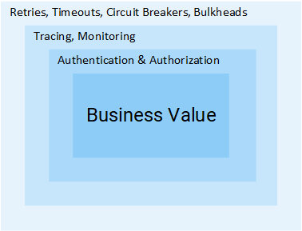
注意： 本文假设您具有Kubernetes的知识。如果不是这种情况，我建议您阅读 我对Kubernetes的介绍，然后继续阅读本文。
关于Istio
在没有Istio的世界中，一个服务向另一个服务直接发出请求，并且在发生故障的情况下，服务需要通过重试，超时，打开熔断器等来处理它。
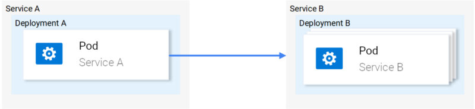
为了解决这个问题，Istio通过与服务完全分离，并通过拦截所有网络通信来提供一种巧妙的解决方案。这样做可以实现：
- Fault Tolerance - 使用响应状态代码，它可以在请求失败并重试时理解。
- Canary Rollouts - 仅将指定百分比的请求转发到新版本的服务。
- 监控和指标 - 服务响应所花费的时间。
- 跟踪和可观察性 - 它在每个请求中添加特殊header，并在集群中跟踪它们。
- 安全性 - 提取JWT令牌并对用户进行身份验证和授权。
仅举几例（仅举几例），让您感兴趣！ 我们来看一些技术细节吧！
Istio的架构
Istio拦截所有网络流量，并通过在每个pod中注入智能代理作为sidecar来应用一组规则。启用所有功能的代理包括 数据平面， 并且这些代理可由控制平面 动态配置。
数据平面
注入的代理使Istio能够轻松满足我们的要求。举个例子，我们来看看重试和熔断器功能。
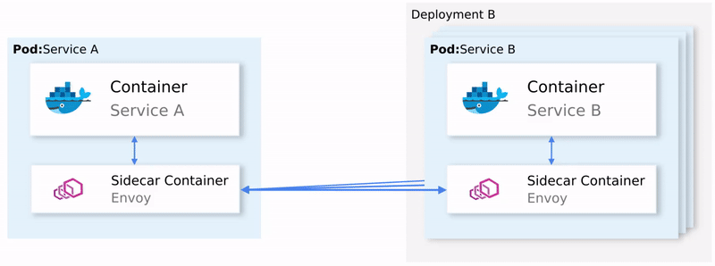
总结一下：
- Envoy将请求发送到服务B的第一个实例，但它失败了。
- Envoy sidecar重试。（1）
- 返回对调用代理的失败请求。
- 这将打开熔断器并在后续请求中调用下一个服务。（2）
这意味着您不必使用另一个重试库，您不必在编程语言X，Y或Z中开发自己的Circuit Breaking和Service Discovery实现。所有这些都是开箱即用的。这些功能都是通过Istio来实现，你不需要更改代码。
很好！ 现在你想加入Istio的航行，但你仍然有一些疑虑，一些悬而未决的问题。这是一个一刀切的方案，你对它持怀疑态度，因为它总是最终成为一刀切的无解方案！
你最终低声说了这个问题：“这是可配置的吗？”
欢迎我的朋友来巡航，我们将为大家介绍一下控制平面。
控制平面
由三个组件组成： Pilot、 Mixer 和 Citadel，它们组合使用Envoys来路由流量，实施策略和收集遥测数据。如下图所示。
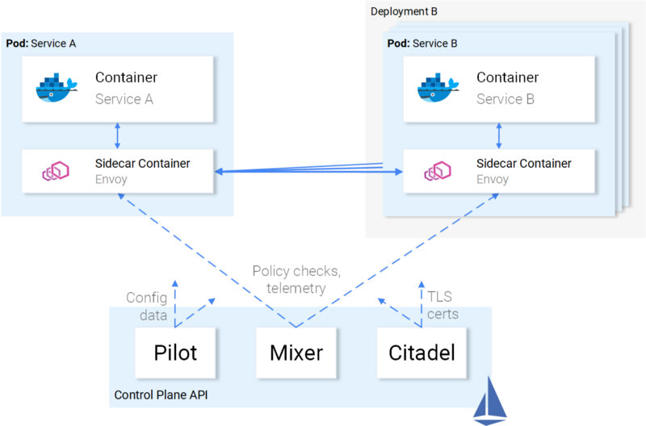
Envoy（即数据平面）使用由Istio定义的 Kubernetes自定义资源定义 进行配置。这意味着对你而言，它只是另一个具有熟悉语法的Kubernetes资源。创建后将由控制平面获取，并将其应用于Envoy。
服务与Istio的关系
我们描述了Istio与我们服务的关系，但我们反过来思考一下，我们的服务与Istio的关系是什么？
坦率地说，我们的服务对Istio的存在有着尽可能多的了解，就像鱼对水一样，他们会问自己“这到底是什么水？”。
这意味着您可以选择一个工作集群，在部署了Istio的组件后，其中的服务将继续工作，并且以相同的方式，您可以删除组件，一切都会很好。可以理解的是，您将失去Istio提供的功能。
我们已经有足够的理论，下面让我们把这些理论付诸实践！
Istio实践
Istio至少需要一个具有4个vCPU和8 GB RAM的Kubernetes集群。要快速设置集群并跟进本文，我建议使用Google云端平台，它为新用户提供 300美元的免费试用版 。
使用Kubernetes命令行工具创建集群并配置访问后，我们已准备好使用Helm Package管理器安装Istio。
安装Helm
按照官方文档中的说明在您的计算机上安装Helm客户端 。我们将在下一节中使用它来生成Istio安装模板。
安装Istio
从最新版本下载Istio的资源，将内容提取到一个我们将称之为的目录中[istio-resources] 。
要轻松识别Istio资源 istio-system，请在Kubernetes集群中创建命名空间 ：
$ kubectl create namespace istio-system
然后进入到 [istio-resources] 目录并执行以下命令来完成安装 ：
$ helm template install/kubernetes/helm/istio \
--set global.mtls.enabled = false \
--set tracing.enabled = true \
--set kiali.enabled = true \
--set grafana.enabled = true \
--namespace istio-system > istio.yaml
上面的命令将Istio的核心组件输出到文件 istio.yaml 中。我们使用以下参数自定义模板：
- global.mtls.enabled 设置为false以保持引入的重点。
- tracing.enabled 允许使用jaeger跟踪请求。
- kiali.enabled 在我们的集群中安装Kiali以实现服务和流量的可视化
- grafana.enabled 安装Grafana，为了收集指标的可视化。
通过执行以下命令应用生成的资源
$ kubectl apply -f istio.yaml
这标志着我们集群中Istio安装的完成！等到istio-system命名空间中的所有pod都处于Running或Completed状态，执行以下命令：
$ kubectl get pods -n istio-system
现在我们已准备好继续下一部分，我们将在其中启动并运行示例应用程序。
Sentiment Analysis应用架构
我们将使用Kubernetes简介文章中使用的相同微服务应用程序，它足以在实践中展示Istio的功能。
该应用程序由四个微服务组成：
- SA-Frontend服务 ：提供前端Reactjs应用程序。
- SA-WebApp服务 ：处理对Sentiment Analysis的请求。
- SA-Logic服务 ：执行sentiment Analysis。
- SA反馈服务 ：接收用户关于分析准确性的反馈。
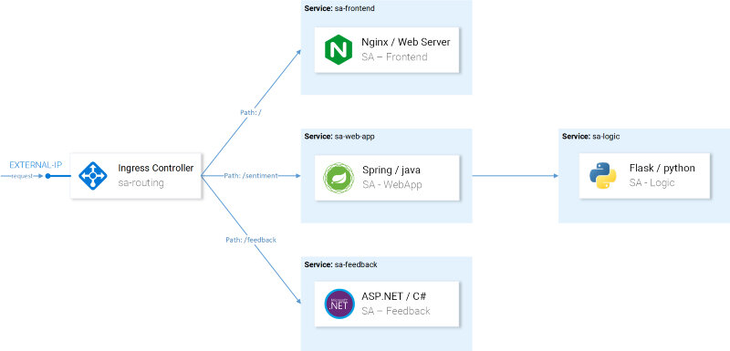
在图6中，除了服务之外，我们还看到Ingress Controller在Kubernetes中将传入的请求路由到适当的服务，Istio使用了一个名为Ingress Gateway的类似概念，将在本文的后续部分中介绍。
使用Istio Proxies运行应用程序
要跟进本文，请克隆存储库istio-mastery（ https://github.com/rinormaloku/istio-mastery ），其中包含Kubernetes和Istio的应用程序和清单。
Sidecar Injection
注入是 自动 或 手动 完成的 。要启用自动sidecar注入，我们需要 istio-injection=enabled 通过执行以下命令 来标记命名空间 ：
$ kubectl label namespace default istio-injection=enabled
namespace/default labeled
从现在开始，部署到默认命名空间的每个pod都将获得注入的sidecar。为了验证这一点，我们通过进入到 [istio-mastery] 存储库的根文件夹 并执行以下命令 来部署示例应用程序 ：
$ kubectl apply -f resource-manifests/kube
persistentvolumeclaim/sqlite-pvc created
deployment.extensions/sa-feedback created
service/sa-feedback created
deployment.extensions/sa-frontend created
service/sa-frontend created
deployment.extensions/sa-logic created
service/sa-logic created
deployment.extensions/sa-web-app created
service/sa-web-app created
在部署的服务中，通过执行以下命令 kubectl get pods 验证pod有两个容器（service和sidecar）， 并确保准备好后，我们看到值“ 2/2 ”表示两个容器都在运行。如下所示：
$ kubectl get pods
NAME READY STATUS RESTARTS AGE
sa-feedback-55f5dc4d9c-c9wfv 2/2 Running 0 12m
sa-frontend-558f8986-hhkj9 2/2 Running 0 12m
sa-logic-568498cb4d-2sjwj 2/2 Running 0 12m
sa-logic-568498cb4d-p4f8c 2/2 Running 0 12m
sa-web-app-599cf47c7c-s7cvd 2/2 Running 0 12m
视觉呈现在图7中。
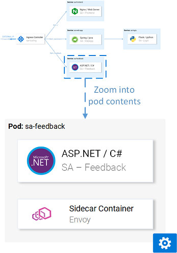
现在，应用程序启动并运行，我们需要允许传入流量到达我们的应用程序。
入口网关
允许流量进入集群的最佳做法是通过Istio的 入口网关 将其自身置于集群的边缘，并在传入流量上实现Istio的功能，如路由，负载均衡，安全性和监控。
在Istio的安装过程中， Ingress Gateway 组件和在外部公开它的服务已安装到集群中。要获取服务外部IP，请执行以下命令：
$ kubectl get svc -n istio-system -l istio=ingressgateway
NAME TYPE CLUSTER-IP EXTERNAL-IP
istio-ingressgateway LoadBalancer 10.0.132.127 13.93.30.120
在本文的后续部分中，我们将访问此IP上的应用程序（称为EXTERNAL-IP），为方便起见，通过执行以下命令将其保存在变量中：
$ EXTERNAL_IP=$(kubectl get svc -n istio-system \
-l app=istio-ingressgateway \
-o jsonpath='{.items[0].status.loadBalancer.ingress[0].ip}')
如果您在浏览器中访问此IP并且您将收到服务不可用错误，则 默认情况下Istio将阻止任何传入流量， 直到我们定义网关。
网关资源
网关是在我们的集群中安装Istio时定义的Kubernetes自定义资源定义，使我们能够指定我们希望允许传入流量的端口，协议和主机。
在我们的场景中，我们希望允许所有主机在端口80上使用HTTP流量。达到以下定义：
apiVersion: networking.istio.io/v1alpha3
kind: Gateway
metadata:
name: http-gateway
spec:
selector:
istio: ingressgateway
servers:
- port:
number: 80
name: http
protocol: HTTP
hosts:
- "*"
除了选择器istio：ingressgateway之外，所有配置都是不需要说明的。使用此选择器，我们可以指定应用配置的Ingress Gateway，在我们的示例中，它是安装在Istio设置上的默认入口网关控制器。
通过执行以下命令应用配置：
$ kubectl apply -f resource-manifests/istio/http-gateway.yaml
gateway.networking.istio.io/http-gateway created
网关现在允许在端口80中进行访问，但它不知道在何处路由请求。这需要使用Virtual Service来实现。
VirtualService资源
VirtualService指示Ingress Gateway如何路由允许进入集群的请求。
对于我们度过即将到来的应用程序请求 HTTP网关 必须被路由到 sa-frontend，sa-web-app 和sa-feedback 服务（出了如图8）。
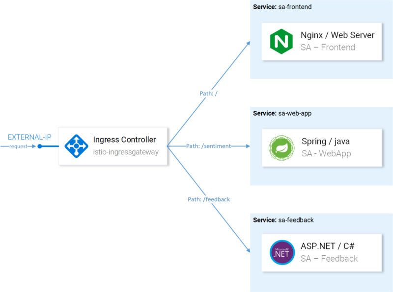
让我们分解以下路由到SA-Frontend的请求：
**/**应将精确路径 路由到SA-Frontend以获取Index.html**/static/***应将前缀路径 路由到SA-Frontend以获取前端所需的任何静态文件，如Css和JavaScript文件。- 匹配正则表达式的路径
'^.*\.(ico|png|jpg)$'应该路由到SA-Frontend，我们应该把图像资源路由到前端。
这是通过以下配置实现的：
kind: VirtualService
metadata:
name: sa-external-services
spec:
hosts:
- "*"
gateways:
- http-gateway # 1
http:
- match:
- uri:
exact: /
- uri:
exact: /callback
- uri:
prefix: /static
- uri:
regex: '^.*\.(ico|png|jpg)$'
route:
- destination:
host: sa-frontend # 2
port:
number: 80
这里的重点是：
- 此VirtualService适用于通过http网关 发出的请求
- Destination定义请求路由到的服务。
注意： 上面的配置位于文件中 sa-virtualservice-external.yaml，它还包含用于路由到SA-WebApp和SA-Feedback的配置，但为简洁起见，已缩短。
通过执行以下命令应用VirtualService：
$ kubectl apply -f resource-manifests/istio/sa-virtualservice-external.yaml
virtualservice.networking.istio.io/sa-external-services created
注意： 当我们应用Istio资源时，Kubernetes API服务器会创建一个由Istio控制平面接收的事件，然后将新配置应用于每个pod的Envoy代理。Ingress Gateway控制器是另一个由控制平面配置的Envoy，如图9所示。
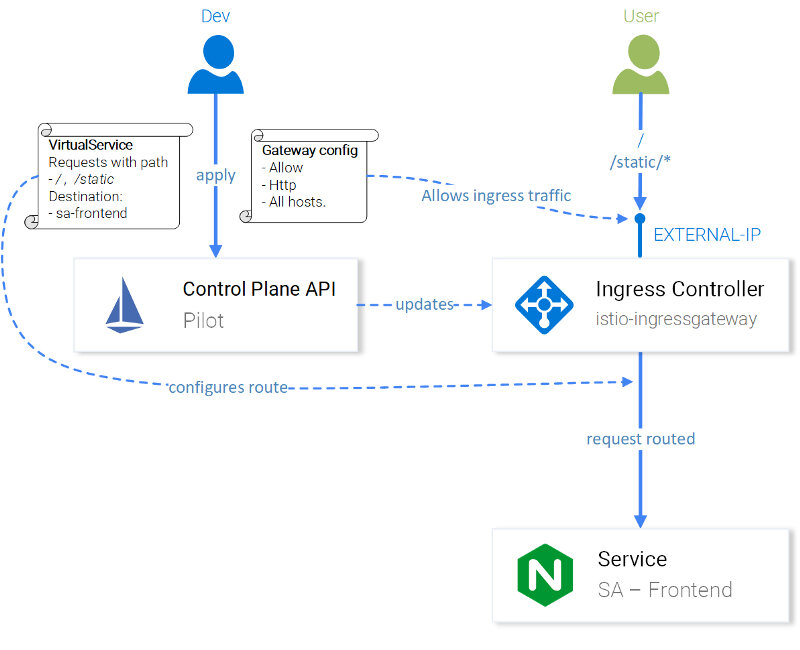
现在可以访问Sentiment Analysis应用程序了 http://{EXTERNAL-IP}/ 。如果您获得Not Found状态，请不要担心 有时需要配置生效才能更新envoy的缓存 。
在转到下一部分之前，请使用该应用程序生成一些流量。
Kiali - 可观察性
要访问Kiali的Admin UI，请执行以下命令：
$ kubectl port-forward \
$(kubectl get pod -n istio-system -l app=kiali \
-o jsonpath='{.items[0].metadata.name}') \
-n istio-system 20001
并 http://localhost:20001/ 使用“admin”（不含引号）为用户和密码打开登录。有很多有用的功能，例如检查Istio组件的配置，根据拦截网络请求和回答收集的信息可视化服务，“谁在调用谁？”，“哪个版本的服务有故障？”等等，花一些时间检验Kiali的功能，然后再转到下一节，用Grafana可视化指标！
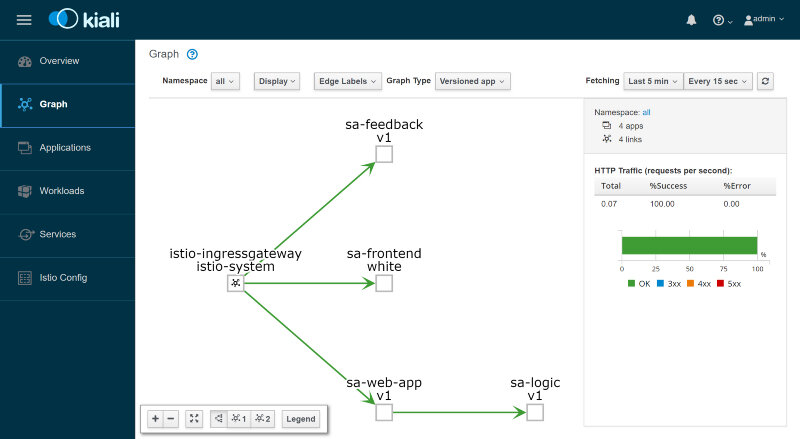
Grafana - 度量可视化
使用Grafana将Istio收集的指标划分为Prometheus和Visualized。要访问Grafana的Admin UI，请执行以下命令并打开http://localhost:3000。
$ kubectl -n istio-system port-forward \
$(kubectl -n istio-system get pod -l app=grafana \
-o jsonpath={.items[0].metadata.name}) 3000
在左上角单击菜单Home 并选择 Istio Service Dashboard 并在左上角选择以sa-web-app开头的服务，您将看到收集的指标，如下图所示：
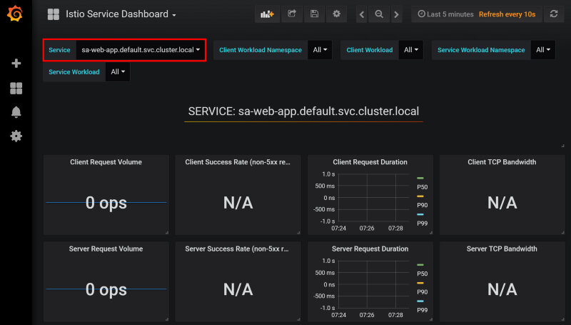
我的妈呀，这是一个没有任何数据的视图，管理层永远不会赞同这一点。让我们通过执行以下命令生成一些负载：
$ while true; do \
curl -i http://$EXTERNAL_IP/sentiment \
-H "Content-type: application/json" \
-d '{"sentence": "I love yogobella"}'; \
sleep .8; done
现在我们拥有更漂亮的图表，此外，我们拥有Prometheus用于监控和Grafana用于可视化指标这些令人惊讶的工具，使我们能够随时了解服务的性能，健康状况，升级或降级！
最后，我们将研究整个服务中的跟踪请求。
Jaeger - 追踪
我们需要跟踪，因为我们所拥有的服务越多，就越难找出失败的原因。我们来看下面图片中的简单案例：
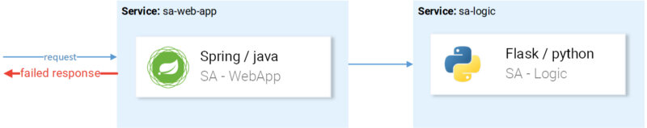
请求进入，失败，原因是什么？第一次服务？还是第二个？两者都有例外情况，让我们来看看每个日志。你发现自己这么做了多少次？ 我们的工作更像是软件侦探而不是开发人员。
这是微服务中的一个普遍问题，它使用分布式跟踪系统解决，其中服务将唯一的header相互传递，然后将此信息转发到请求跟踪放在一起的分布式跟踪系统。一个例子如图13所示。
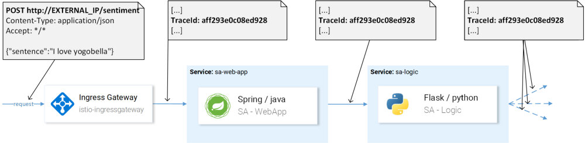
Istio使用Jaeger Tracer实现OpenTracing API，这是一个独立于供应商的框架。要访问Jaegers UI，请执行以下命令：
$ kubectl port-forward -n istio-system \
$(kubectl get pod -n istio-system -l app=jaeger \
-o jsonpath='{.items[0].metadata.name}') 16686
然后在 http://localhost:16686 中打开UI，选择 sa-web-app 服务， 如果下拉列表中未显示该服务，则在页面上生成一些活动并点击刷新 。随后单击该按钮 查找痕迹， 这显示最近的痕迹，选择任何和所有的痕迹的详细分类将会显示 ，如图14所示。
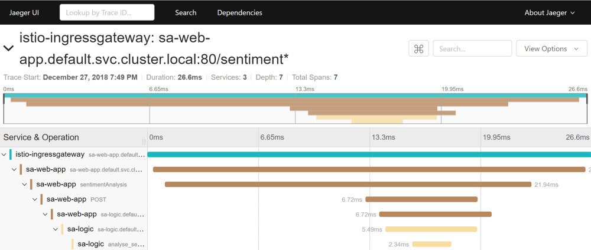
跟踪显示：
- 请求来到 istio-ingressgateway （它是第一次与其中一个服务联系，因此对于生成跟踪ID的请求）然后网关将请求转发给
sa-web-app服务。 - 在
sa-web-app服务中，请求由Envoysidecar拾取并创建一个span（这就是我们在跟踪中看到它的原因）并转发到sa-web-app容器实例。 - 这里方法 sentimentAnalysis 处理请求。这些跟踪由应用程序生成，这意味着需要更改代码）。
- 从POST请求
sa-logic开始的位置。跟踪ID需要sa-web-app传递 。
5. …
注意 ：在第4点，我们的应用程序需要获取Istio生成的header，并在下一个请求时将其传递下来，如下图所示。
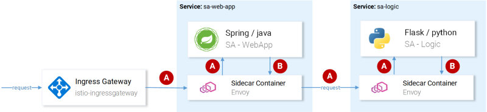
Istio做主要的繁重工作，因为它在传入的请求上生成header，在每个sidecar上创建新的span，传递它们，但是如果没有我们的服务传递header，我们将失去请求的完整跟踪。
要传递的header是：
x-request-id
x-b3-traceid
x-b3-spanid
x-b3-parentspanid
x-b3-sampled
x-b3-flags
x-ot-span-context
尽管这是一项简单的任务，但已经有许多库 可以简化这一过程，例如在 sa-web-app服务中， RestTemplate 客户端通过简单地依赖项中 添加Jaeger和OpenTracing库来传递header 。
注意：Sentiment Analysis应用程序展示了Flask，Spring和ASP.NET Core的实现。
现在，在调查我们开箱即用（或部分开箱即用）之后，让我们来看看这里的主题，细粒度路由，管理网络流量，安全性等等！
流量管理
使用Envoy的Istio为您的集群提供了许多新功能，从而实现：
- 动态请求路由 ：Canary部署，A/B测试，
- 负载均衡： 简单和一致的哈希平衡，
- 故障恢复 ：超时，重试，熔断器，
- 故障注入 ：延迟，中止请求等
在本文的序列中，我们将在我们的应用程序中展示这些功能，并在此过程中介绍一些新概念。我们将研究的第一个概念是DestinationRules，并使用那些我们将启用A/B测试的概念。
A/B测试 - 实践中的目的地规则
当我们有两个版本的应用程序（通常版本视觉上有所不同）时使用A/B测试，并且我们不是100％肯定会增加用户交互，因此我们同时尝试两个版本并收集指标。
执行以下命令以部署演示A/B测试所需的前端的第二个版本：
$ kubectl apply -f resource-manifests/kube/ab-testing/sa-frontend-green-deployment.yaml
deployment.extensions/sa-frontend-green created
绿色版本的部署清单有两点不同：
- 该image基于不同的标签：
istio-green - pod标有
version: green。
而作为双方部署在标签 app: sa-frontend 通过虚拟服务路由的请求 sa-external-services 的服务 sa-frontend 会被转发到所有的实例，并将于负载采用循环算法，这将导致在图16中提出的负载均衡问题。
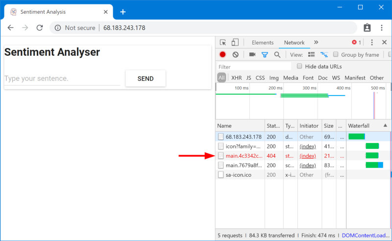
找不到这些文件，因为它们在应用程序的不同版本中的命名方式不同。让我们验证一下：
$ curl --silent http://$EXTERNAL_IP/ | tr '"' '\n' | grep main
/static/css/main.c7071b22.css
/static/js/main.059f8e9c.js
$ curl --silent http://$EXTERNAL_IP/ | tr '"' '\n' | grep main
/static/css/main.f87cd8c9.css
/static/js/main.f7659dbb.js
这意味着请求一个版本的静态文件的index.html可以被负载均衡到提供另一个版本的pod，其中可以理解的是其他文件不存在。
这意味着，为了让我们的应用程序正常工作，我们需要引入限制“为index.html服务的应用程序的版本，必须为后续请求提供服务”。
我们将使用Consistent Hash Loadbalancing来实现这一点，这 是 使用预定义属性（例如HTTP header）将来自同一客户端的请求转发到同一后端实例的过程。由 DestionatioRules提供。
DestinationRules
在 VirtualService 将请求路由到正确的服务之后，然后使用 DestinationRules， 我们可以指定适用于此服务实例的流量的策略，如图17所示。
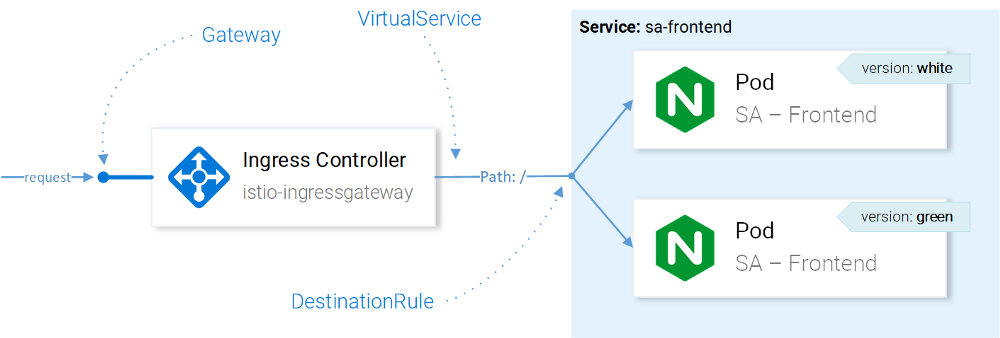
注意： 图17以易于理解的方式可视化Istio资源如何影响网络流量。但是，准确地说，决定将请求转发到哪个实例是由CRD配置的Ingress Gateway的Envoy做出的。
使用目标规则，我们可以将负载均衡配置为具有一致性哈希，并确保同一用户由同一服务实例响应。通过以下配置实现：
apiVersion: networking.istio.io/v1alpha3
kind: DestinationRule
metadata:
name: sa-frontend
spec:
host: sa-frontend
trafficPolicy:
loadBalancer:
consistentHash:
httpHeaderName: version # 1
- 根据“version”标头的内容生成一致的哈希。
通过执行以下命令应用配置并尝试一下！
$ kubectl apply -f resource-manifests/istio/ab-testing/destinationrule-sa-frontend.yaml
destinationrule.networking.istio.io/sa-frontend created
执行以下命令并验证在指定版本header时是否获得相同的文件：
$ curl --silent -H "version: yogo" http://$EXTERNAL_IP/ | tr '"' '\n' | grep main
注意： 为了方便在浏览器中进行测试，您可以使用此 Chrome扩展程序 向版本header添加不同的值，。
DestinationRules具有更多LoadBalancing功能，所有详细信息都可以查看 官方文档 。
在继续更详细地探索VirtualService之前，请执行以下命令，删除应用程序的绿色版本和目标规则：
$ kubectl delete -f resource-manifests/kube/ab-testing/sa-frontend-green-deployment.yaml
deployment.extensions "sa-frontend-green" deleted
$ kubectl delete -f resource-manifests/istio/ab-testing/destinationrule-sa-frontend.yaml
destinationrule.networking.istio.io “sa-frontend” deleted
镜像服务 - 实践中的虚拟服务
当我们想要测试生产中的更改但不影响最终用户时，会使用影子或镜像，因此我们将请求镜像到具有更改并评估它的第二个实例中。 更简单的是，当你的一个同事选择最关键的问题并制作一个超大的合并请求，并且没人能真正审查。
要测试此功能，可以 通过执行以下命令 创建SA-Logic的第二个实例（ 这是buggy的 ）：
$ kubectl apply -f resource-manifests/kube/shadowing/sa-logic-service-buggy.yaml
deployment.extensions/sa-logic-buggy created
执行以下命令并验证所有实例都标有相应的版本，另外还有app=sa-logic标记：
$ kubectl get pods -l app=sa-logic --show-labels
NAME READY LABELS
sa-logic-568498cb4d-2sjwj 2/2 app=sa-logic,version=v1
sa-logic-568498cb4d-p4f8c 2/2 app=sa-logic,version=v1
sa-logic-buggy-76dff55847-2fl66 2/2 app=sa-logic,version=v2
sa-logic-buggy-76dff55847-kx8zz 2/2 app=sa-logic,version=v2
当 sa-logic 服务目标pod标记为 app=sa-logic时，任何传入请求将在所有实例之间进行负载均衡，如图18所示。
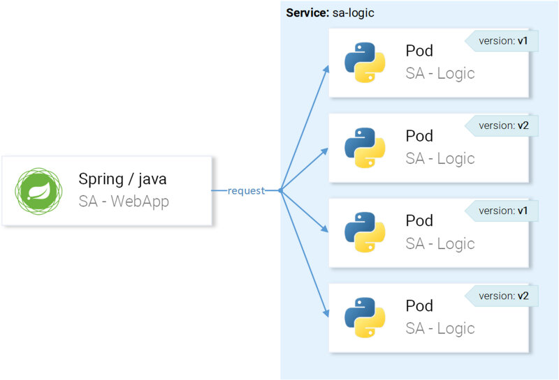
但我们希望将请求路由到版本为v1的实例，并镜像到版本为v2的实例，如图19所示。
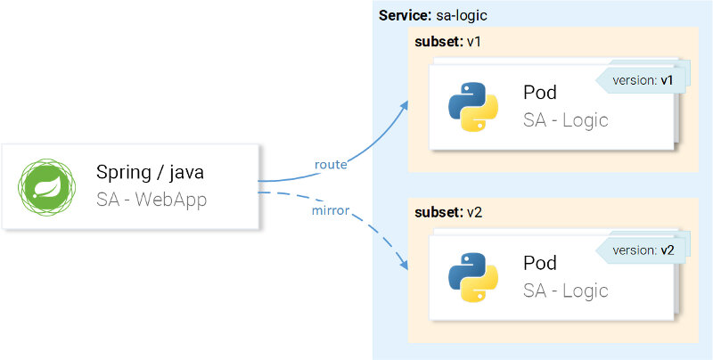
这是使用VirtualService与DestinationRule结合实现的，其中目标规则指定到特定子集的子集和VirtualService路由。
使用目标规则指定子集
我们使用以下配置定义子集：
apiVersion: networking.istio.io/v1alpha3
kind: DestinationRule
metadata:
name: sa-logic
spec:
host: sa-logic # 1
subsets:
- name: v1 # 2
labels:
version: v1 # 3
- name: v2
labels:
version: v2
- 主机定义此规则仅在向
sa-logic服务发生路由时适用 - 路由到子集实例时使用的子集名称。
- Label定义了需要匹配的键值对，以使实例成为子集的一部分。
应用执行以下命令的配置：
$ kubectl apply -f resource-manifests/istio/shadowing/sa-logic-subsets-destinationrule.yaml
destinationrule.networking.istio.io/sa-logic created
通过定义子集，我们可以继续并配置VirtualService以应用于请求 sa-logic 所在的请求：
- 路由到名为v1的子集，
- 镜像到名为v2的子集。
这是通过以下清单实现的：
apiVersion: networking.istio.io/v1alpha3
kind: VirtualService
metadata:
name: sa-logic
spec:
hosts:
- sa-logic
http:
- route:
- destination:
host: sa-logic
subset: v1
mirror:
host: sa-logic
subset: v2
由于一切配置都是不言自明的，让我们看看它的执行：
$ kubectl apply -f resource-manifests/istio/shadowing/sa-logic-subsets-shadowing-vs.yaml
virtualservice.networking.istio.io/sa-logic created
通过执行以下命令添加一些负载：
$ while true; do curl -v http://$EXTERNAL_IP/sentiment \
-H "Content-type: application/json" \
-d '{"sentence": "I love yogobella"}'; \
sleep .8; done
检查Grafana中的结果，在那里我们可以看到有错误的版本大约有60％的请求失败，但没有一个失败影响最终用户，因为它们被当前活动的服务响应。
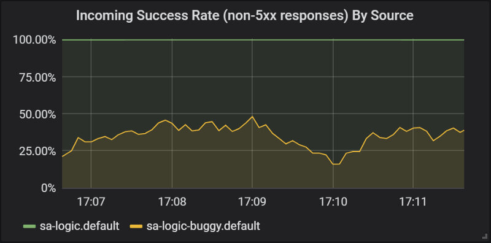
在本节中，我们第一次看到应用于我们服务的envoy的VirtualService，当对此 sa-web-app 提出请求时， sa-logic 通过sidecar Envoy，通过VirtualService配置为路由到子集v1并镜像到服务的子集v2 sa-logic 。
我可以看到你在想“Darn man Virtual Services很简单！”，在下一节中，我们将把句子扩展为“Simply Amazing！”。
金丝雀部署
Canary Deployment是向少数用户推出新版本应用程序的过程，作为验证缺少问题的一个步骤，然后向更广泛的受众提供更高质量的发布保证。
我们将继续使用相同的buggy子集 sa-logic 来演示canary部署。
让我们大胆地开始，通过应用下面的VirtualService，将20％的用户发送到有缺陷的版本（这代表金丝雀部署）和80％的健康服务：
apiVersion: networking.istio.io/v1alpha3
kind: VirtualService
metadata:
name: sa-logic
spec:
hosts:
- sa-logic
http:
- route:
- destination:
host: sa-logic
subset: v1
weight: 80 # 1
- destination:
host: sa-logic
subset: v2
weight: 20 # 1
- 权重指定要转发到目标或目标子集的请求的百分比。
sa-logic 使用以下命令 更新以前的 虚拟服务配置：
$ kubectl apply -f resource-manifests/istio/canary/sa-logic-subsets-canary-versusyaml
virtualservice.networking.istio.io/sa-logic configured
我们立即看到我们的一些请求失败了：
$ while true; do \
curl -i http://$EXTERNAL_IP/sentiment \
-H “Content-type: application/json” \
-d '{"sentence": "I love yogobella"}' \
--silent -w "Time: %{time_total}s \t Status: %{http_code}\n" \
-o /dev/null; sleep .1; done
Time: 0.153075s Status: 200
Time: 0.137581s Status: 200
Time: 0.139345s Status: 200
Time: 30.291806s Status: 500
VirtualServices启用了Canary Deployments，通过这种方法，我们将潜在的损害减少到了20％的用户群。漂亮！ 现在，每当我们对代码不安全时，我们就可以使用Shadowing和Canary Deployments，换句话说，总是如此。😜
超时和重试
代码并不总是错误的。在“ 分布式计算的8个谬误 ”列表中，第一个谬论是“网络可靠”。网络不可靠，这就是我们需要超时和重试的原因。
出于演示目的，我们将继续使用有缺陷的版本 sa-logic，其中随机故障模拟网络的不可靠性。
有缺陷的服务有三分之一的机会花费太长时间来响应，三分之一的机会以内部服务器错误结束，其余的成功完成。
为了缓解这些问题并改善用户体验，我们可以：
- 如果服务时间超过8秒，则超时
- 重试失败的请求。
这是通过以下资源定义实现的：
apiVersion: networking.istio.io/v1alpha3
kind: VirtualService
metadata:
name: sa-logic
spec:
hosts:
- sa-logic
http:
- route:
- destination:
host: sa-logic
subset: v1
weight: 50
- destination:
host: sa-logic
subset: v2
weight: 50
timeout: 8s # 1
retries:
attempts: 3 # 2
perTryTimeout: 3s # 3
- 请求的超时时间为8秒，
- 它尝试了3次，
- 如果尝试时间超过3秒，则尝试将请求标记为失败。
这是一种优化，因为用户不会等待超过8秒，并且我们在发生故障时重试三次，从而增加了导致响应成功的机会。
使用以下命令应用更新的配置：
$ kubectl apply -f resource-manifests/istio/retries/sa-logic-retries-timeouts-vs.yaml
virtualservice.networking.istio.io/sa-logic configured
并查看Grafana图表，了解成功率的改善情况（如图21所示）。
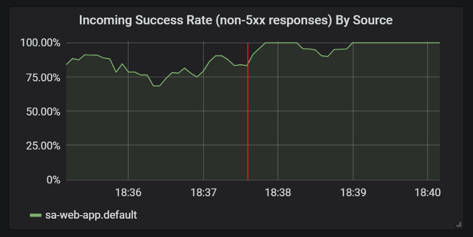
在 sa-logic-buggy 通过执行以下命令 进入下一部分delete 和VirtualService 之前 ：
$ kubectl delete deployment sa-logic-buggy
deployment.extensions "sa-logic-buggy" deleted
$ kubectl delete virtualservice sa-logic
virtualservice.networking.istio.io “sa-logic” deleted
熔断器和隔离模式
微服务架构中的两个重要模式，可以实现服务的自我修复。
该 熔断器 是用来阻止请求将视为不健康服务的一个实例，并使它能够恢复，在此期间客户端的请求转发到该服务的健康情况（增加成功率）。
该 隔离模式 整个系统降级来隔离错误，防止错误传播，举一个隔离故障例子，服务B处于损坏状态和其它服务（服务B的客户端）发出请求到服务B，这将导致该客户端将使用了自己的线程池，将无法提供其他请求（即使这些请求与服务B无关）。
我将跳过这些模式的实现，因为您可以查看 官方文档中的实现，我很兴奋地展示身份验证和授权，这将是下一篇文章的主题。
第一部分 - 摘要
在本文中，我们在Kubernetes集群中部署了Istio，并使用其自定义资源定义（如 网关， VirtualServices， DestinationRules 及其组件）启用了以下功能：
- 使用 Kiali，通过查看正在运行的服务，它们如何执行，以及它们关系，来观察我们的服务 。
- 使用 Prometheus 和 Grafana 进行收集和可视化 。
- 请求 Jaeger 跟踪 （Hunter的德语）。
- 对网络流量进行全面细粒度控制，实现 Canary Deployments， A/B测试和Shadowing 。
- 轻松实现 重试，超时和CircuitBreakers 。
所有这些都可以在没有代码更改或任何其他依赖性的情况下实现，从而使您的服务保持小巧，易于操作和维护
对于您的开发团队来说，消除这些跨领域的问题并将它们集中到Istio的控制平面，意味着新服务很容易引入，它们不会占用大量资源，因为开发人员可以专注于解决业务问题。到目前为止，没有任何开发人员抱怨“必须解决有趣的业务问题！”。
我很乐意在下面的评论中听到您的想法，并随时在 Twitter 或我的页面 rinormaloku.com 上与我 联系，并继续关注下一篇文章，我们将解决最后一层认证和授权问题！